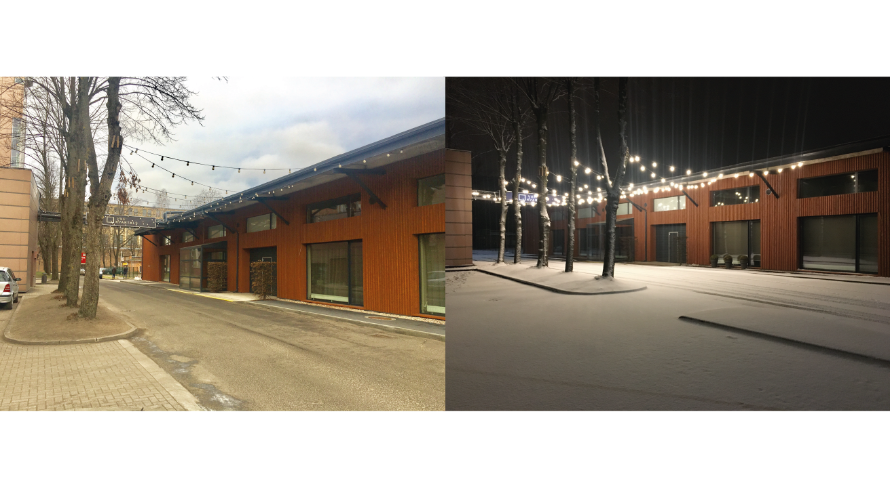
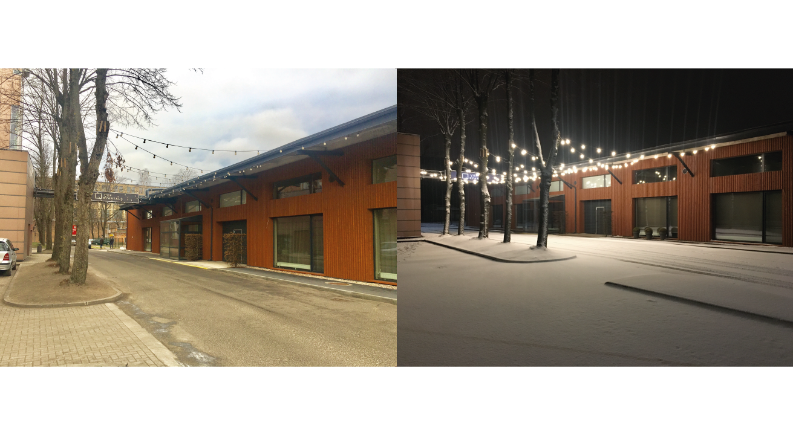

Elektriskās gaismas vēsture.

Elektriskā gaisma, kas ir viena no ikdienas ērtībām, kas visvairāk ietekmē mūsu dzīvi, 1879. gadā Thomas Alva Edison tradicionālajā izpratnē nebija "izgudrots", lai gan viņš varēja teikt, ka ir izveidojis pirmo komerciāli praktisko kvēlspuldzi. Viņš nebija ne pirmais, ne vienīgais, kurš mēģināja izgudrot kvēlspuldzi. Faktiski daži vēsturnieki apgalvo, ka pirms Edisona versijas bija vairāk nekā 20 izgudrotāji. Tomēr Edisonam bieži tiek piešķirts izgudrojums, jo viņa versija varēja pārspēt iepriekšējās versijas, jo bija trīs faktoru kombinācija: efektīva kvēlspuldze, lielāks vakuums nekā citiem, un liela pretestība, kas ļāva sadalīt elektroenerģiju centralizēts avots ekonomiski dzīvotspējīgs.


 
